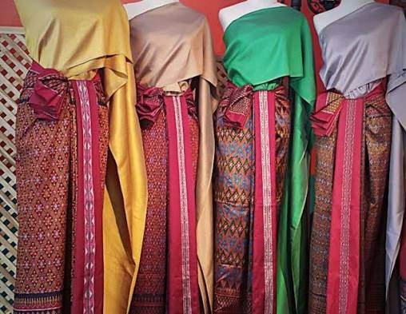
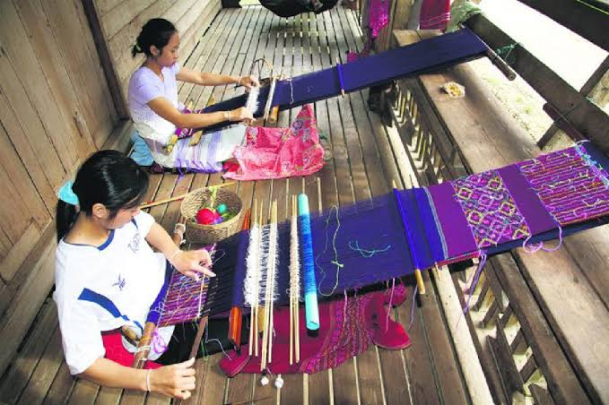
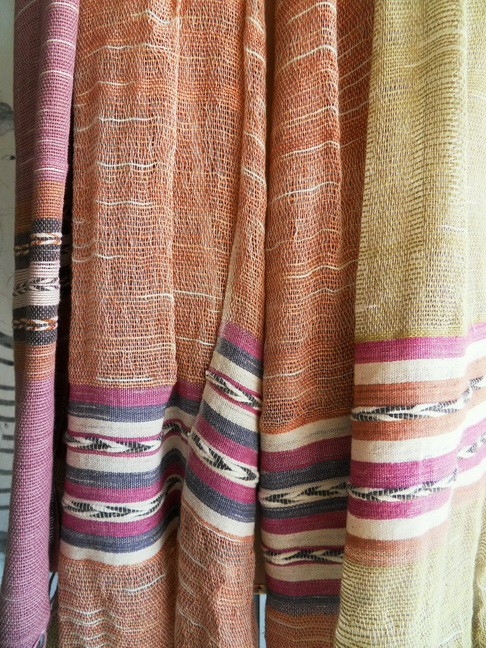
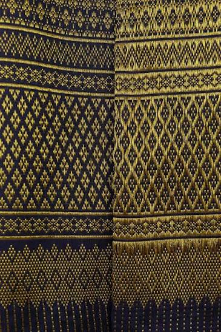

ผ้าไหม
ผลิตจากเส้นไหม มีลักษณะนุ่มและมีความมันวาว นิยมใช้ในการทำเครื่องแต่งกายและผ้าไทย

สิ่งทอไทยเป็นมรดกทางวัฒนธรรมที่สะท้อนภูมิปัญญา วิถีชีวิต และเอกลักษณ์ของผู้คนในแต่ละท้องถิ่น โดยแต่ละภูมิภาคมีรูปแบบการทอ ลวดลาย และสีสัน ที่แตกต่างกัน
ผ้าไหมและผ้าฝ้ายเป็นวัสดุสำคัญที่นำมาใช้ในการผลิต เครื่องแต่งกายไทย โดยผ่านกระบวนการเตรียมเส้นใย การย้อมสี และการทอด้วยกรรมวิธีที่สืบทอดกันมา จากรุ่นสู่รุ่น

ผลิตจากเส้นไหม มีลักษณะนุ่มและมีความมันวาว นิยมใช้ในการทำเครื่องแต่งกายและผ้าไทย

ผลิตจากเส้นใยฝ้าย มีน้ำหนักเบา ระบายอากาศได้ดี และนิยมใช้ในเครื่องแต่งกายพื้นเมือง

เป็นผ้าที่สร้างลวดลายด้วยการเพิ่มเส้นพุ่งพิเศษ ทำให้เกิดลวดลายที่มีความละเอียดและสวยงาม
การมัดเส้นไหมตามตำแหน่งของลวดลาย ก่อนนำไปย้อมและทอ
การสร้างลวดลายโดยการยกเส้นยืนบางส่วน แล้วสอดเส้นพุ่งตามรูปแบบที่กำหนด
การใช้เส้นพุ่งพิเศษสอดแทรกตามตำแหน่ง เพื่อสร้างลวดลายบนผืนผ้า
เทคนิคการทอที่ทำให้ลวดลายมีลักษณะนูน ขึ้นจากพื้นผ้า